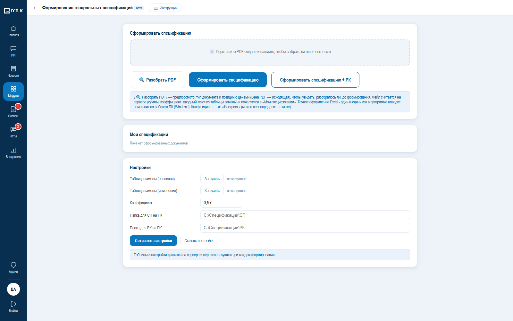
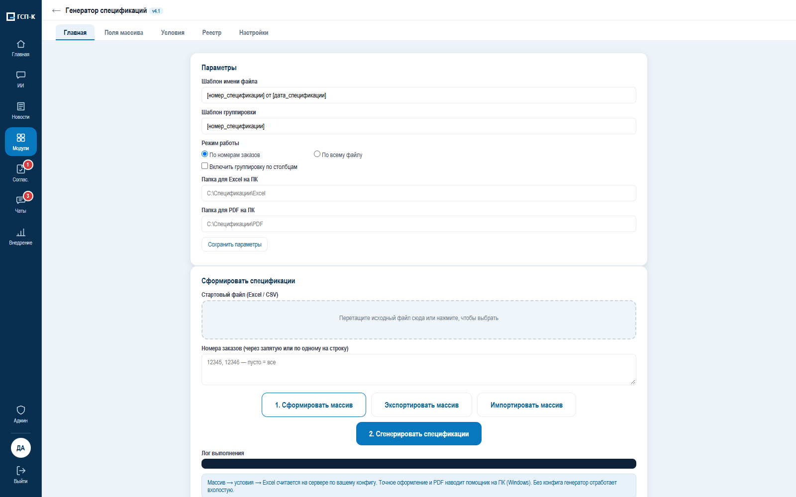
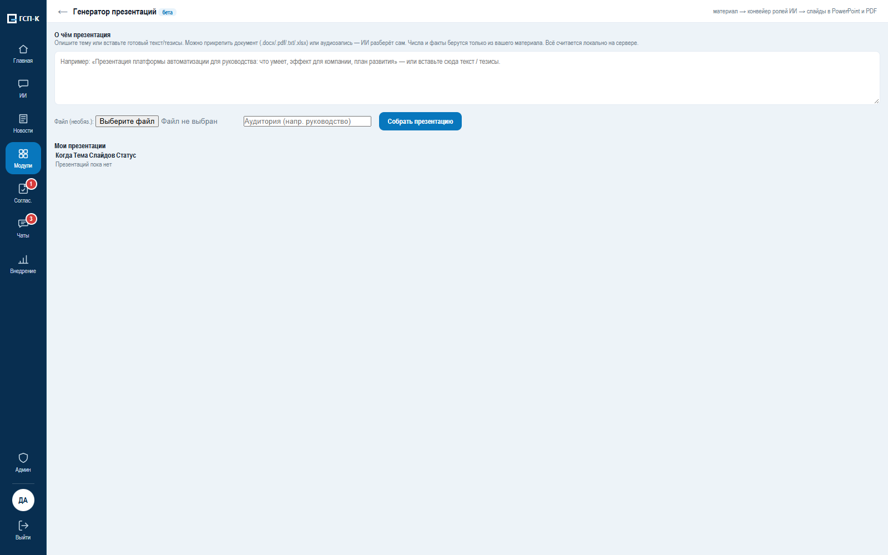
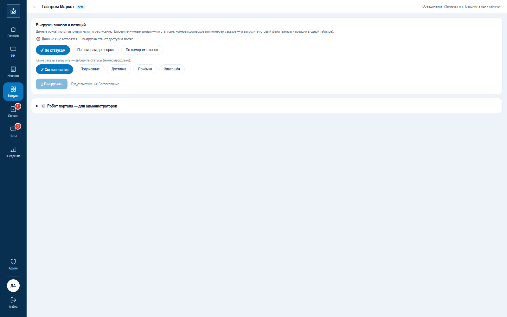
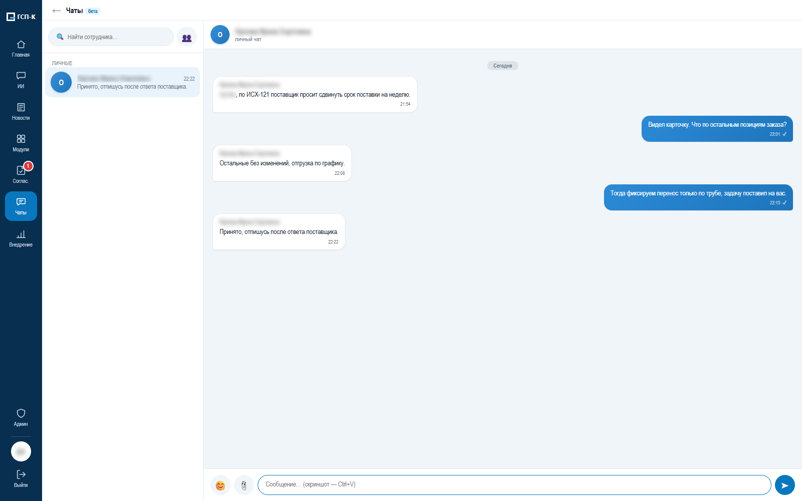

16 модулей платформы ГСП
Для каждого — задача сотрудника, что было и что стало, результат и блок «Технически» для специалистов. Скриншоты сняты на демо‑данных.
Входящие письма
Регистраторы входящей корреспонденцииКарточка письма заполняется из скана; регистратор видит скан и карточку рядом и подтверждает одним нажатием.
было
- Скан на три страницы читали целиком, карточку из двух десятков полей заводили вручную.
- Строку переносили в реестр Excel, потом в 1С; часть писем терялась между почтой и реестром.
стало
- Письмо попадает в модуль само, система распознаёт текст и заполняет 14 полей карточки.
- Регистратор исправляет и подтверждает; каждая правка становится оценкой качества.
- Реестр заполняется автоматически, решение «регистрировать / нет» верно в 99,5 %.
ТЕХНИЧЕСКИ — ДЛЯ СПЕЦИАЛИСТОВ
OCR и локальная Qwen через Ollama заполняют карточку из 23 полей; ветка обработки выбирается автоматически.
Очередь на диске переживает перезапуск сервера; качество считается по реальным правкам регистратора.

Генеральные спецификации
Специалисты по комплектации и закупкамЗеркальная генеральная спецификация формируется из PDF поставщика, а не перепечатывается.
было
- Данные документов поставщика переносили в форму спецификации вручную.
- Одни и те же позиции перепечатывали из файла в файл.
стало
- Специалист загружает исходный PDF.
- Модуль формирует зеркальную спецификацию для проверки и выгрузки.
ТЕХНИЧЕСКИ — ДЛЯ СПЕЦИАЛИСТОВ
Разбор PDF и таблиц поставщика; документ по шаблону генеральной спецификации.

Формирование спецификаций
Специалисты по комплектации и закупкамСпецификация к договору собирается из исходных данных поставщика в нужной форме.
было
- Спецификацию собирали вручную из писем, таблиц и прайсов.
- Позиции повторно набирали в форме документа.
стало
- Исходные файлы загружаются в модуль, спецификация собирается в нужной форме.
- Сотрудник проверяет и выгружает документ.
ТЕХНИЧЕСКИ — ДЛЯ СПЕЦИАЛИСТОВ
Разбор исходных таблиц (xls, xlsb, xlsx) и документов; сумма прописью; выгрузка в Excel и PDF.

История цен закупок
Закупщики и руководители при подготовке закупки и переговорахЕдиная база закупленных позиций: поиск по названию, график цены по времени, поставщик и договор.
было
- «Почём брали трубу 57×3,5 в прошлом году?» — поиск по папкам и памяти коллег.
- Час‑два, и не всегда с результатом.
стало
- Поиск по названию возвращает закупленные позиции с ценой, поставщиком, датой и договором.
- График показывает изменение цены во времени; выборка выгружается в Excel.
ТЕХНИЧЕСКИ — ДЛЯ СПЕЦИАЛИСТОВ
Полнотекстовый индекс FTS5 и нечёткое сопоставление названий; история цен из спецификаций и реестров платформы.

Сверка спецификаций (ЕСЦУЗ)
Специалисты комплектации, УМТО и УУиР — 19 сотрудников за неделюКаждая позиция сверяется с данными 1С; 19 проверок и готовое замечание вместо сверки глазами.
было
- Наименование, количество и цену каждой позиции сверяли глазами с 1С.
- Расхождения искали построчно, часть замечаний пропускали.
стало
- Модуль выполняет 19 проверок и готовит замечание; расхождения видны списком.
- Документ идёт по маршруту УМТО → УУиР с историей решений; 270 документов за неделю.
ТЕХНИЧЕСКИ — ДЛЯ СПЕЦИАЛИСТОВ
Полнотекстовое и нечёткое сопоставление с номенклатурой 1С; данные 1С только на чтение через согласованную интеграцию.
Эталоны и «Кто обучает ИИ»: сотрудники сами улучшают чтение документов.

Согласование спецификаций
Закупщики, руководители управлений, согласующие службыСогласование идёт внутри платформы: версии, замечания, голоса комиссии и предложение ИИ в одной карточке.
было
- Версии гоняли по почте: «см. вложение, версия 7 финальная 2».
- Кто согласовал и когда — восстанавливали по письмам.
стало
- Одна карточка с версиями; замечания привязаны к версии и позиции.
- Комиссия фиксирует голоса, ИИ готовит предложение, решение принимает человек.
ТЕХНИЧЕСКИ — ДЛЯ СПЕЦИАЛИСТОВ
Маршрут с ролями, голосованием и уведомлениями; журнал изменений по каждой версии.

Протоколы совещаний
Секретари совещаний, руководителиИз аудиозаписи совещания — расшифровка, выжимка и черновик протокола с решениями, сроками и ответственными.
было
- Протокол писали полдня по своим заметкам.
- Решения и ответственные терялись.
стало
- Запись загружается в модуль, система делает расшифровку и протокол.
- Человек правит текст и выгружает Word.
ТЕХНИЧЕСКИ — ДЛЯ СПЕЦИАЛИСТОВ
faster‑whisper распознаёт речь локально; языковая модель выделяет решения, сроки и ответственных. Аудио не покидает сервер.

Презентации для руководства
Руководители управлений и их помощникиОтчётная презентация собирается по шаблону из данных платформы.
было
- Слайды каждый раз собирали руками из одних и тех же таблиц.
стало
- Выбирается шаблон и период, слайды заполняются данными платформы.
- Результат — PPTX и PDF.
ТЕХНИЧЕСКИ — ДЛЯ СПЕЦИАЛИСТОВ
Генерация PPTX и PDF по шаблонам конвейером ролей; данные из модулей.

Экспедиторские расписки
Сотрудники, работающие с экспедиторскими документамиXML экспедиторской расписки превращается в читаемый PDF одним действием.
было
- Расписка приходит XML‑файлом, который нельзя прочитать и распечатать.
стало
- Файл или ZIP загружается в модуль, результат — PDF.
ТЕХНИЧЕСКИ — ДЛЯ СПЕЦИАЛИСТОВ
Конвертер XML → PDF с проверкой структуры; защищённый разбор XML.
ЭКРАН
Снимок этого экрана на демо‑данных ещё не снят; покажу на демонстрации.
Отсутствия, командировки, отпуска
Все сотрудники и их руководителиЗаявка, согласование, календарь отсутствий и график отпусков — в системе и через бота.
было
- Журнал командировок — тетрадь; согласование — обход кабинетов с бумагой.
- Отчёт по подразделению собирали вручную в конце месяца.
стало
- Заявка подаётся в системе или через Telegram‑бота; руководитель согласует в один клик.
- Календарь отсутствий и график отпусков по правилам ТК; отчёт формируется сам.
ТЕХНИЧЕСКИ — ДЛЯ СПЕЦИАЛИСТОВ
Веб и Telegram‑бот, маршруты согласования, график отпусков с правилами дробления (28 дней, части кратны 7), выгрузка отчётов.

Задачи
Руководители и сотрудники управленийПоручения с исполнителем, сроком и проверяющим; просроченное видно на одном экране.
было
- Поручения в мессенджерах и на словах.
- Кто что должен и к какому сроку — неясно.
стало
- У задачи есть исполнитель, срок, проверяющий, статус, вложения и чек‑лист.
- Руководитель видит просроченное на канбан‑доске.
ТЕХНИЧЕСКИ — ДЛЯ СПЕЦИАЛИСТОВ
Статусы, роль проверяющего, уведомления, канбан с перетаскиванием, журнал изменений.

Склад
Сотрудники, работающие с имуществомУчёт имущества открывается из платформы в один клик; складской учёт остаётся в своей системе.
было
- Учёт имущества жил в отдельной системе со своим входом.
стало
- Переход к учёту имущества — из единого рабочего места.
ТЕХНИЧЕСКИ — ДЛЯ СПЕЦИАЛИСТОВ
Модуль‑ссылка на систему учёта имущества.
ЭКРАН
Снимок этого экрана на демо‑данных ещё не снят; покажу на демонстрации.
Газпром Маркет
Закупщики и руководители, работающие с порталомВыгрузки портала закупок превращаются в эталон заказов и позиций и в аналитические экраны.
было
- Данные портала жили в выгрузках; сводные представления собирали вручную.
стало
- Робот забирает реестр заказов и спецификации с портала по расписанию.
- «Эталон» заказов и позиций — основа ≈ 14 дашбордов и выгрузок в Excel.
ТЕХНИЧЕСКИ — ДЛЯ СПЕЦИАЛИСТОВ
Робот на Playwright, планировщик, демон докачки позиций под systemd; макрос импорта в «Перечень потребностей».

Акты М‑7
Специалисты комплектации и складаАкты приёмки материалов разбираются из писем, PDF и таблиц в реестр из 33 столбцов с подбором по выгрузке 1С.
было
- Акты приходили таблицами разного формата; их сводили в реестр вручную, позиция за позицией.
стало
- Модуль принимает .msg, PDF и XLSX, собирает реестр и подбирает позиции по выгрузке ЕСЦУЗ.
- PDF сверяется с Excel; спорные случаи выделяются для проверки; по готовым актам собирается письмо поставщику.
ТЕХНИЧЕСКИ — ДЛЯ СПЕЦИАЛИСТОВ
Разбор MSG, PDF и XLSX; нормализация позиций; дисковая очередь импорта переживает рестарт; сверка PDF ↔ Excel; реквизиты поставщика из ФНС.

Метрики: входящие письма
Руководство управления делопроизводстваЭкран руководителя: поток писем, качество карточек по полям, читаемость сканов и недельная динамика.
было
- «Пришлите отчёт» — и день на сбор цифр из разных источников.
стало
- Загружено, обработано, отложено; доля карточек без правок и точность по каждому полю.
- Стадия внедрения, эталоны и подсказки — что улучшать дальше.
ТЕХНИЧЕСКИ — ДЛЯ СПЕЦИАЛИСТОВ
Агрегаты потока, качества, точности полей, читаемости и доработок; экран без плитки, доступ по правам.

Показатели: акты М‑7
Руководители, контролирующие обработку актовЭкран руководителя по актам: импорт, сопоставление с ЕСЦУЗ, точность полей и работа проверяющих.
было
- Открытый, проверенный и выгруженный акт было не отличить без ручного отчёта.
стало
- Результаты импорта, обогащение, ошибки и неоднозначные совпадения — на одном экране.
- Точность полей, заполненность, сверка PDF ↔ Excel и дни без работы.
ТЕХНИЧЕСКИ — ДЛЯ СПЕЦИАЛИСТОВ
Показатели импорта, сопоставления, точности и действий проверяющих; отчёт по дням и неделям загрузки.
ЭКРАН
Снимок этого экрана на демо‑данных ещё не снят; покажу на демонстрации.
Общий контур платформы
Переписка, помощник и управление внедрением дополняют модули и держат всё в одном контуре.
Чат сотрудников
Переписка по задачам и документам внутри контура компании, с историей и правами.

ИИ‑помощник
Вопрос обычным языком — ответ по данным платформы, только в рамках прав пользователя.

Права, журнал, внедрение
Доступ по управлениям, журнал каждого действия, матрица внедрения по стадиям, «Журнал внедрений» для сотрудников.

Давайте поговорим
Обсудим задачу автоматизации, продукт и внедрение. Покажу платформу на демо‑данных по договорённости.
Скриншоты сняты на демо‑данных: все имена, организации и суммы вымышленные.
Цифры со знаком ≈ — оценка по объёму потока и времени операций до и после; остальные измерены, взяты из еженедельных отчётов по модулям и журналов разработки.
Экономия времени не означает сокращение штата: освобождённые часы уходят на проверку и решения.
Кирилл Паскаль · Руководитель направления автоматизации и ИИ‑продуктов · 2026